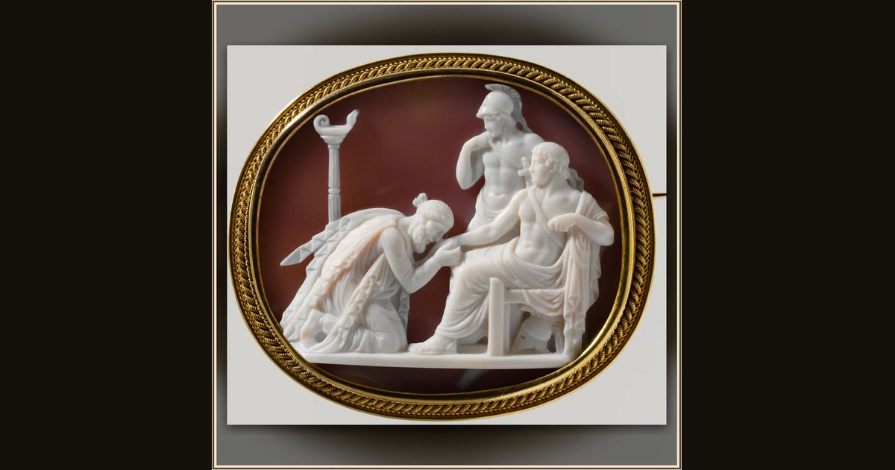

Priam Supplicating Achilles for the Body of Hector
Giuseppe Girometti · ca. 1815–25 · met
In this onyx cameo the aged Priam kneels and kisses the hand of the seated Achilles, begging for the body of Hector (24.477–479). Explore its place in Homer's Iliad, Book XXIV, line 478.